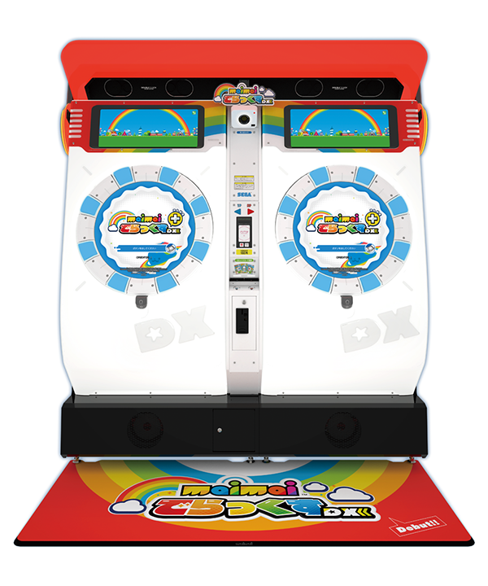
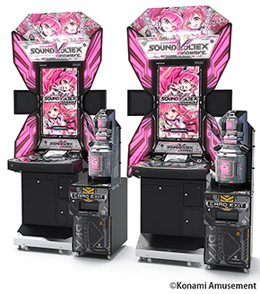
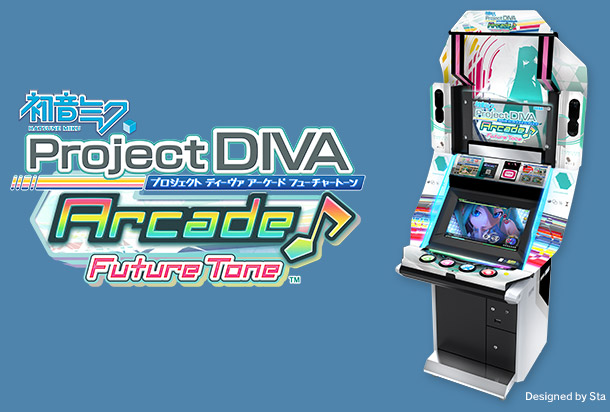

| ノーツの方向 | 操作方法 | ターゲット層 | 判定の厳しさ | |
|---|---|---|---|---|
| CHUNITHM | 上から下 | グラウンドスライダーとエアーストリングス | 中学生以上 | やさしい |
| maimai | 中央から外側 | タッチパネルとボタン | 中学生以上 | やさしい |
| 太鼓の達人 | 右から左 | バチで太鼓をたたく | 親と遊びに来た小さい子供 | 普通 |
| Sound Voltex | 上から下 | ボタン6つとアナログデバイス2つ | 音ゲー好きな人 | やや厳しい |
| 初音ミク:Project DIVA | ランダム | ボタン4つとタッチパネル | ボーカロイド曲が好きな人 | 普通 |
(1)
このゲームはディスプレイの下にある静電容量式のタッチパネル「グラウンドスライダー」と呼ばれる部分とスライダーの斜め上に2つ付いている「エアーストリングス」と呼ばれる空間センサーがあります。空間センサーの搭載により手を振り上げたり振り下ろしたりする動作が追加されることになるため、ダイナミックな動きが要求され、感覚的に楽しいゲームになっています。
前のページで紹介したレーティングシステムですが、このゲームにも搭載されています。現在(2021-1-21)の全国最高レートは15.99です。また、その数字が色によって分けられています。分け方は以下の通りです。
| レーティング | 色 |
|---|---|
| 0.00～3.99 | 緑 |
| 4.00～6.99 | 橙 |
| 7.00～9.99 | 赤 |
| 10.00～11.99 | 紫 |
| 12.00～12.99 | 銅 |
| 13.00～13.99 | 銀 |
| 14.00～14.49 | 金 |
| 14.50～14.99 | 鉑 |
| 15.00～ | 虹 |
このゲーム様々な大きさのTAPノーツやSLIDEノーツがあります。基本的に範囲内であればどこを触っても反応してくれるため、スライドを使って、曲に合わせた文字スライドや絵スライドを使用することが出来ます。そのため見た目も、楽しいゲームになっています。
(2)
ボタンから対称のボタンまでそこそこの距離があるため難易度が高くなるほど普通の運動よりも疲れます。
私は外出自粛の運動不足解消のためによくプレイしています。
CHUNITHM程ではないものの、スライドで絵を描くことが出来るので曲に合わせた様々な表現や小ネタを挟むことが出来ます。
このゲームにはレーティングシステムもありますが、段位認定も存在します。
ドラム型洗濯機のような形をしているこの筐体は、いままでに形が似ていることから洗濯機やパインアメとコラボしていました。
(3)
他の音ゲーは素手か手袋を使って遊ぶのが基本ですが、このゲームはバチを使って太鼓をたたくことで操作します。上級者になると置いているバチが使いづらく感じるので自分のバチを持ってくることもあります。
今回紹介するゲームの中だとかなり古いです。そのためか、随分昔に流行った曲・私が生まれてないころに作られた曲（クラシックなど）から、児童向けアニメの曲・童謡まで幅広く取りそろえられています。
幅広い年代の曲を採用しているためか、他の音ゲーよりも小さな子供がやっている姿をよく見かけるような気がします。
(4)
このゲームは平面上にボタンが４つ（BTボタン）横に並べられていて、その手前側に２つ（FXボタン）があり、BTボタンの斜め奥につまみを回して操作する「アナログデバイス」があります。これらを駆使することでゲームクリアを目指します。
他のアーケード音ゲーに比べて判定が厳しい傾向にあります。そのため、初めて音ゲーをやる人にはあまりお勧めできません。判定はよい方からCRITICAL/NEAR/ERRORの3つがあり、ERRORを0にして完走することで「ULTIMATE CHAIN（UC）」となりCRITICALのみを出して完走すると「PARFECT ULTIMATE CHAIN（PUC）」という特別な評価を受けることが出来ます。
(5)
まずは収録楽曲がボーカロイド曲だけで構成されていることです。他の音ゲーには今流行りの曲やアニメの楽曲を入れることで集客していますが、この音ゲーは顧客層をボーカロイド好きのみに絞ることでファンがうれしいゲームになっています。ボーカロイド好きにはお勧めできるゲームです。
固定の判定バーが存在せず、外側からくるノーツ（△〇×□の4種類+左右の矢印ノーツ）が穴に重なったときにボタンを押す、もしくはスライド操作をすることでクリアを目指す他にはないシステムになっているところ
次のページではこのページで紹介した以外のアーケード音ゲーについて軽く説明します。次のページ⇒